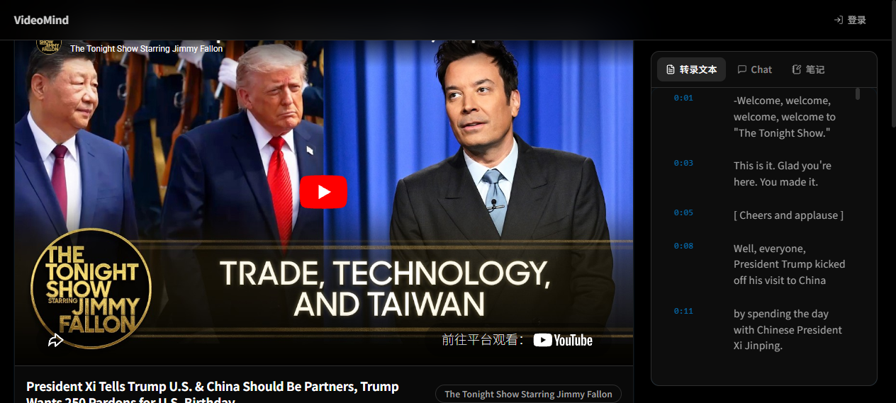
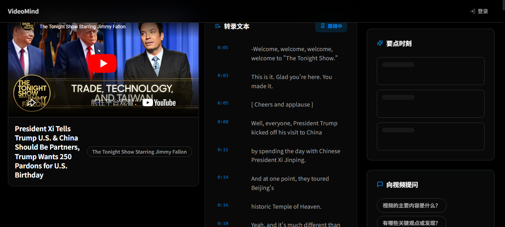

1. 产品基本信息
一句话介绍
粘贴一个 YouTube 链接，AI 自动帮你提取字幕、生成摘要与关键点、基于视频内容对话答疑，并把生词和句子沉淀成可间隔复习的个人学习库。
| 项目 | 内容 |
|---|
| 产品名称 | Teach Player（又名 VideoMind） |
| 目标用户 | 用 YouTube 学英语（听力/口语/词汇）的学习者；用 YouTube 做知识输入（技术教程、演讲、纪录片、公开课）的自学者；需要把「看过」变成「记住」的内容消费者。 |
| 核心场景 | 看英文技术教程或 TED 演讲时，AI 把视频「嚼碎」成结构化知识，并帮助长期记忆，免去反复拖进度条、切窗口查词、散落记笔记。 |
| 形态 | Web 应用（Next.js）+ 安卓 APP（Beta）；桌面 / 移动响应式。 |
2. 需求来源
痛点
- YouTube 是优质学习内容的最大入口，但「观看 ≠ 吸收」：字幕分散、重点难定位、生词需跳转词典、笔记散落。
- 现有字幕/翻译工具只解决「看得见」，不解决「学得会」——缺少上下文理解、缺乏记忆闭环。
- 通用 AI 对话无法感知「你正在看的那条具体视频」，回答易脱离上下文、无法引用时间戳。
需求来源
- 个人学习刚需：作者用 YouTube 学英语与技术的真实低效循环。
- 用户验证：首页 / 历史 / 单词本 / 复习上线后，真实解析与打卡数据验证了「字幕→生词→复习」链路的留存价值。
解决的问题
把「看视频」升级为「学视频」——AI 完成信息提取与答疑，间隔复习完成长期记忆，统一工作区完成知识沉淀。
3. 产品方案设计
3.1 产品定位
一个「以视频为单位的 AI 学习工作区」，不是播放器也不是词典，而是连接「内容输入 → AI 加工 → 个人知识库 → 长期记忆」的闭环工具。
3.2 核心功能
| 模块 | 功能 | 说明 |
|---|
| 视频解析 | 一键解析 | 粘贴链接自动拉取元数据 + 字幕（4 层回退链保障覆盖率） |
| AI 加工 | 智能摘要 | 大模型生成结构化摘要 + 分段要点 |
| AI 加工 | 关键时刻 | AI 提取最有价值片段，双语展示，点击跳转播放 |
| AI 加工 | AI 对话 | 基于字幕上下文答疑，回答带时间戳引用 |
| 学习 | 单词/句子收藏 | 点击字幕中单词/句子，一键收藏到生词本 / 语料库 |
| 学习 | 个人笔记 | 每条视频独立 Markdown 笔记 |
| 记忆 | 间隔复习 | SM-2 算法 + 答题式闪卡 + 每日打卡 + 日历热力图 |
| 系统 | 深色/响应式 | 全站深色主题，桌面与移动端自适应 |
3.3 核心交互流程
- 首页粘贴 YouTube 链接 → 解析 videoId → 进入视频工作区。
- 工作区左侧播放视频，右侧 Tab 切换：转录文本 / Chat / 笔记 / 复习。
- 转录文本支持原文/译文/双语切换，自动跟随播放滚动，单词可 hover 查词并收藏。
- AI 按需生成摘要 / 关键时刻 / 对话；结果缓存 7 天。
- 收藏的单词、句子、笔记进入个人库；每日进入复习页用 SM-2 巩固记忆。
4. AI 工作流程
输入 用户粘贴的 YouTube 链接；工作区内的追问问题（Chat）；需翻译的字幕段落。
flowchart TD
A[用户粘贴 YouTube 链接] --> B[解析层: 提取 videoId]
B --> C[拉取元数据 + 字幕
Innertube → HTML → npm 包 → Supadata
4 层回退]
C --> D[AI 摘要层: 字幕切片
大模型生成结构化摘要 + 要点]
C --> E[AI 关键点层: 挑出高价值片段
输出带时间戳双语要点]
C --> F[AI 对话层: 用户提问 + 字幕上下文
生成带时间戳引用的回答]
D --> G[输出校验 Zod + 失败修复]
E --> G
F --> G
G --> H[缓存层: video_analyses 7 天缓存]
H --> I[前端展示: 摘要 / 关键时刻 / Chat]
I -. 用户确认 .-> J[切换翻译模式 / 收藏单词句子 / 保存笔记 / 复习评分]
AI Provider 设计 统一 AiProvider 接口（OpenAi / Gemini 双实现），内置模型回退链（deepseek-v4-flash → qwen → glm → kimi）。配置优先级：用户个人设置 > 全局设置 > 环境变量。所有 AI 输出经 Zod 校验，失败触发修复逻辑。
最终输出 结构化摘要、带时间戳的关键时刻、基于上下文的对话回答、单词/句子的翻译与释义。
需用户确认的环节 翻译语言模式切换；收藏单词/句子、保存笔记需主动点击；复习评分由用户选择影响 SM-2 间隔；AI 内容默认仅供参考，可重新生成或追问。
5. Demo 展示
界面截图

▲ 首页（粘贴链接）与视频工作区（播放器 + 转录/Chat/笔记/复习）实际界面。

▲ 工作区布局设计迭代对比。
6. 预期收益
用户价值
- 学习效率：把「找重点 + 查词 + 记笔记」三步合并到同一工作区，单次学习的信息提炼时间预计缩短 50%+。
- 记忆留存：SM-2 间隔复习把「看过即忘」转为「可量化掌握」，长期留存率显著提升。
- 体验改善：深色护眼、自动跟随滚动、hover 即时查词，降低学习摩擦。
效率提升（产品侧）
- 字幕 4 层回退链保障解析成功率；AI 结果 7 天缓存减少重复推理成本。
- 统一 AiProvider 接口 + 模型回退链，提升 AI 可用性与成本韧性。
商业价值
- 免费增值（Free + 订阅）模型：Stripe 结账 + Webhook 已接入，可按解析额度 / 高级模型 / 复习容量分层变现。
- 安卓 APP 已出 Beta，具备移动端获客与留存基础，可延伸内容社区 / 学习数据报告。
7. 项目复盘
收获
- 完整跑通「字幕提取 → AI 加工 → 个人知识库 → 间隔复习」端到端闭环，验证产品假设。
- 沉淀可替换的 Provider 架构（AI / 字幕均可热切换）与统一 API 安全包装（withSecurity：CSRF + 限速 + 体积限制）。
- 深度实践 RLS 行级安全、Zod 输入/输出校验、AI 输出修复等关键工程实践。
遇到的问题
- YouTube 字幕获取不稳定（地域 / 反爬），需用 4 层回退链 + 外部 API 兜底。
- AI 输出偶发格式错误，需 Zod 校验 + 修复逻辑兜底，保证前端不崩。
- 移动端交互（hover 查词、Tab 切换）需单独适配，开发量高于预期。
当前不足
- 摘要 / 关键时刻为一次性生成，缺少多轮迭代 + 用户微调能力。
- 复习题型较单一（选择释义 / 选择单词），缺拼写、听写等主动回忆题型。
- 缺少学习成效量化报告（掌握曲线、预测遗忘点）增强留存动机。
下一步迭代计划
- 增加「关键时间点」可视化时间轴 + 用户手动标记重点。
- 复习题型扩展：拼写、听写、句子补全；引入「预测遗忘」提醒。
- 学习数据报告：掌握曲线、周报、连续学习激励。
- 安卓 APP 正式版 + 桌面端（已含 Tauri 工程），打通多端同步。
- 探索内容社区 / 共享笔记，提升网络效应与付费转化。